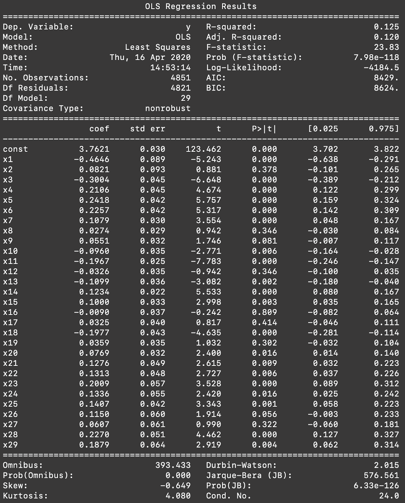
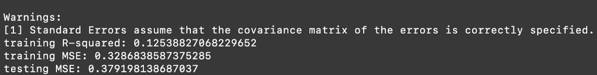
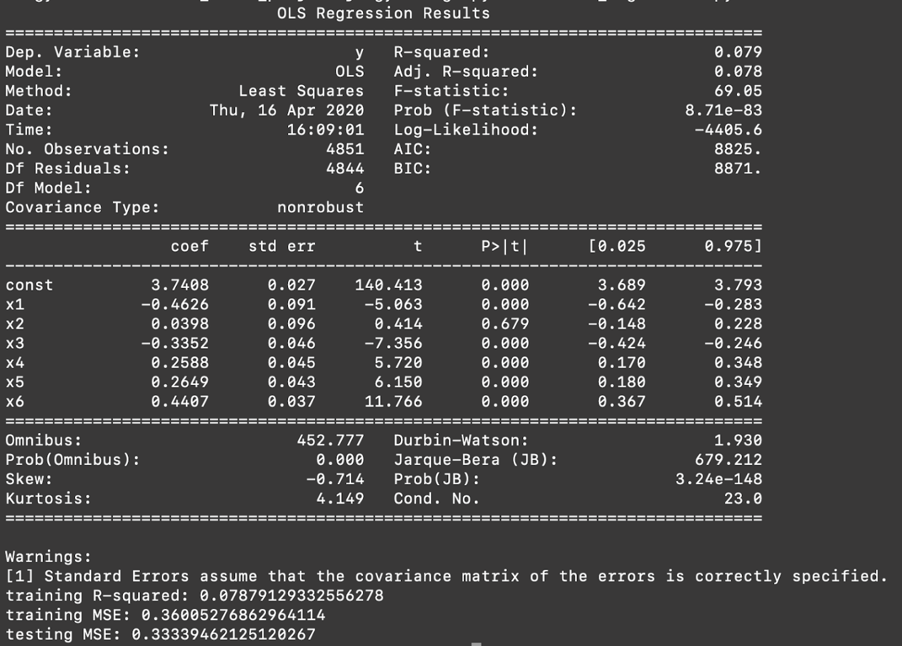
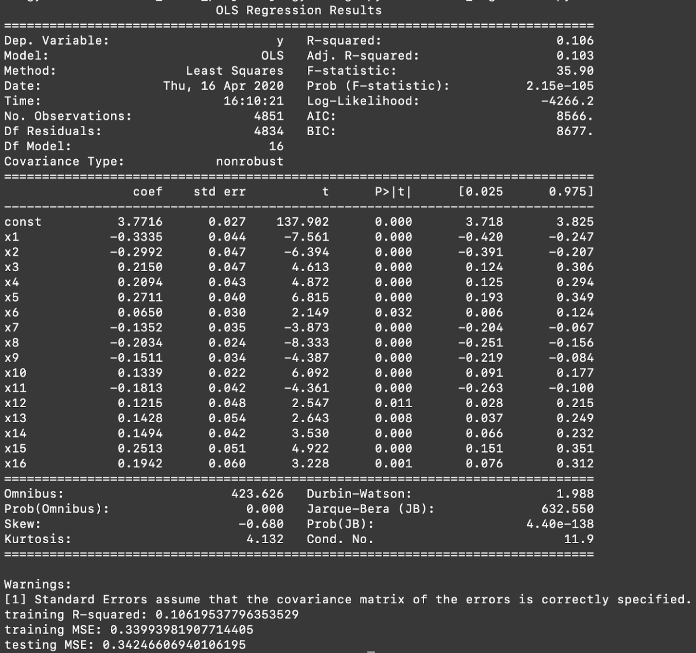
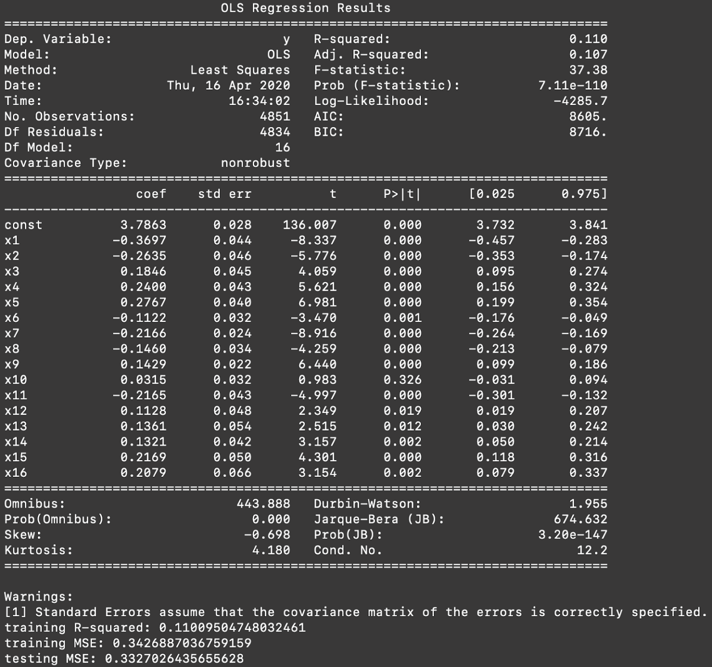
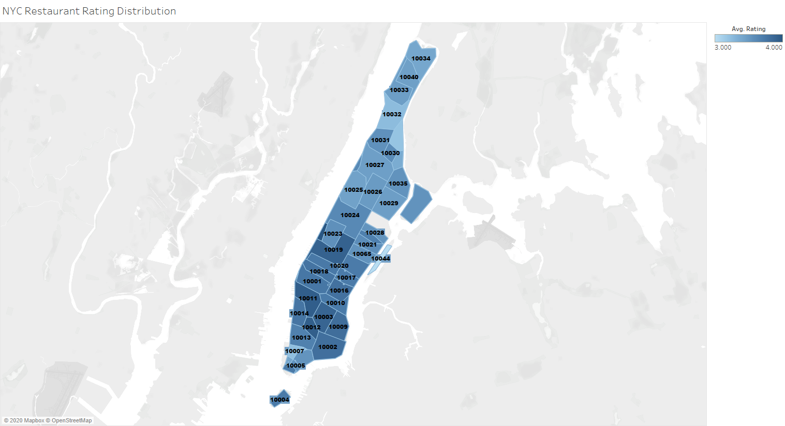
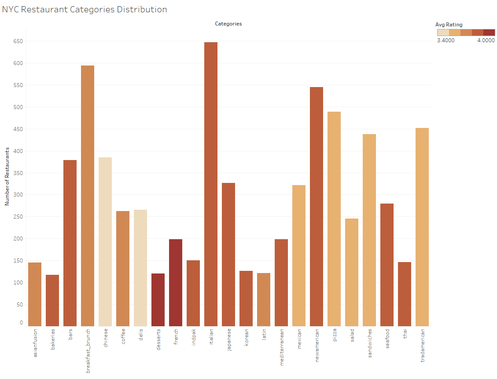

We proposed to predict the rating of a restaurant given a restaurant's business attributes: location information (city, state, zipcode, longitude, latitude), popular categories, price level, and transaction types (restaurant reservation, pickup, delivery).
We chose multiple linear regression to achieve the goal. Our metrics for success would be the R-squared value and the value of MSE. We consider our model is successful if R-squared is relatively high and MSE is low. R-squared score is the proportion of the variance in the dependent variable that is predictable from the independent variables so a relatively high value means a high level of correlation between the dependent variable and independent variables. For MSE, it represents the average of the square of the errors so a smaller number would show less error.
We used multiple linear regression since we found there are multiple variables affecting our dependent variable which is the rating of a restaurant. Also, it helps us to see the extent that the influence our independent variables have on our dependent variable.
The challenge we faced evaluating the model was that the number of features Yelp provided was not enough for us to predict the result so our R-squared value is low for now and we are looking at collecting more features and combining more data in the next step to make our model more accurate.
We have restructured our data by removing some restaurants that don’t show their price level and we converted price level from symbols to a single number. Also, we splitted the restaurant categories into several variables so we can classify those restaurants in a more specific way.
We got two metrics from our analysis, the first one is MSE, which is around 0.35 for both train set and test set, which means if using our model to predict the rating of a restaurant, the average error between the prediction result and the real rating is sqrt(0.35) = 0.6 in average; The second one is R-squared value, we have tried using different dependent variables and the R-squared value is usually between 0.1-0.15, which is quite low, the reason might be 1. We are missing some important features; 2. Our model (multiple regression) is too simple； 3. The current preprocessing method is too simple. We will continue to experiment with more sophisticated machine learning models and preprocessing methods (will be described below).
We first show the histogram of the number of all restaurant categories in NYC, since we have to know the distribution of the categories before we use them as a features, there are over 200 categories so it’s impossible to include all of them in our features, we picked the most popular categories and did some manual grouping.
Then we show the tables of multiple linear regression results to see the r-squared values, training MSEs, and testing MSEs, as well as the coefficients and p-values of the independent variables.
We also show the relationship between category and the average rating of restaurants that belong to the category in the same histogram which shows the number of all restaurant categories, and make a graph which shows the rating distribution in NYC, thus shows the relationship between location and the average rating of restaurants within this location. With these two visualizations, we can see the correlation between the independent variables (category, location) and dependent variable (rating) in an intuitive way.
We have built multiple linear regression models with different combinations of the 29 independent variables. All of them had very low training R-squared values (the highest was 0.125) and large training and testing MSEs.
Since we wanted to use multiple linear regression models to predict rating (a quantitative dependent variable), we selected 2 appropriate quantitative independent variables (latitude, longitude) from the original dataset, coded the categorical variable transaction_type into three indicator variables (delivery, pickup, restaurant_reservation), and price into a quantitative variable based on the number of dollar symbols. For the category variable in the original dataset, each row (business) has a list of categories the restaurant falls into. There are 238 different categories so it was impossible to convert them all to indicator variables. Instead, we looked at the distribution of the categories and picked the most popular ones - 23 categories each with more than 100 restaurants, and converted them into indicator variables. Since some of the 238 categories are somewhat correlated and could be aggregated, we grouped together some related/similar categories to make the category indicator variables cover more restaurants. For example, different types of bar/pub were grouped together as ‘bar’; tacos and mexican were grouped together as ‘mexican’.
The 23 categories used were:
'italian', 'breakfast_brunch', 'newamerican', 'pizza', 'tradamerican', 'sandwiches', 'chinese', 'bars', 'japanese', 'mexican', 'seafood', 'delis', 'coffee', 'salad', 'mediterranean', 'french', 'indpak', 'thai', 'asianfusion', 'korean', 'latin', 'desserts', 'bakeries'
MLR result with all 29 independent variables:


Other than building a multiple linear regression with all 29 categories, we also tried to reduce the number of independent variables by iteratively removing features with lowest weight and removing features based on p-values.
Not using any category indicator variables:

Using features with higher weight:

Using features with backward elimination:

Including category indicator variables definitely boosted the R-squared value from 0.079, and including all 23 categories seemed to yield the highest R-squared value. Including only 16 independent variables gave a slightly lower R-squared value but a smaller testing MSE than using all 29 variables. Selectively removing independent variables from the largest (the first) model helped to lower the testing MSE.
Since the location information (city, state, zip code, longitude, latitude) is a critical feature in our input, we would like to know whether the location of a restaurant actually affects its rating. The first visualization shows a rating distribution in New York City. We find that districts such as Chelsea and Hell’s Kitchen obtain top average ratings, those districts are usually known as great neighborhoods to live in. Especially, Hell's Kitchen (which is at 10019) has an extensive restaurant culture just like what is implied by its name, and it might be because that Hell’s Kitchen is home to many Broadway and off-Broadway theatres. Obviously, location itself cannot decide the rating of a restaurant, we would like to find out how the type of food a restaurant offers affects its popularity. We look at the distribution of NYC’s restaurant categories:

We calculate the average ratings of those restaurants in each category and represent them in the histogram. Note that the categories we are considering have at least one hundred restaurants, otherwise the category is not generalized enough. We actually find several types of food that have relatively higher ratings than others. It seems like french restaurants and dessert restaurants are more welcome in New York City. By contrast, Chinese restaurants and delis are less welcomed.

We chose to use multiple linear regression because our dependent variable (rating) is a quantitative variable and the set of independent variables is a combination of quantitative variables and categorical variables.
There is no sensitive/protected attribute in the model.
We will be using additional tests/models for feature selection, such as stepwise regression, other types of regression (polynomial), support vector regression, regression trees, and PCA. For the poster, we are thinking about using bar plots to show the change of R-squared and MSE values as different combinations of independent variables are used.